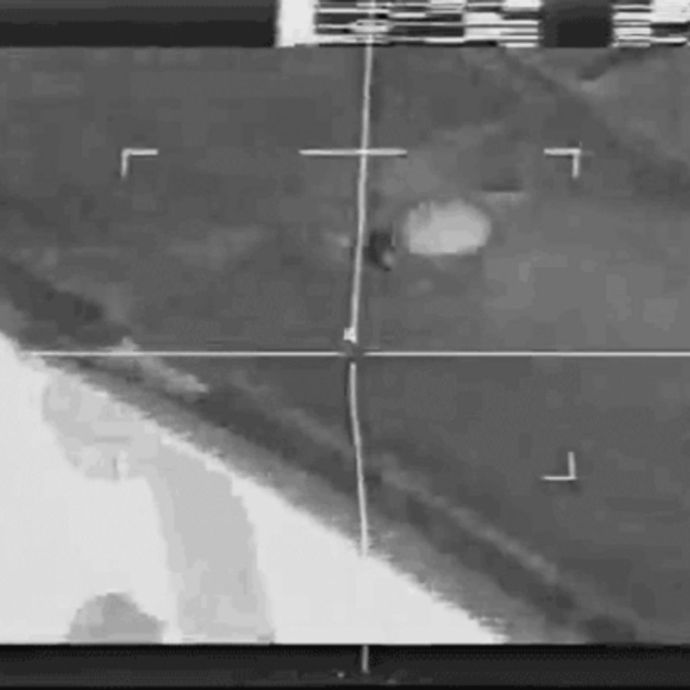
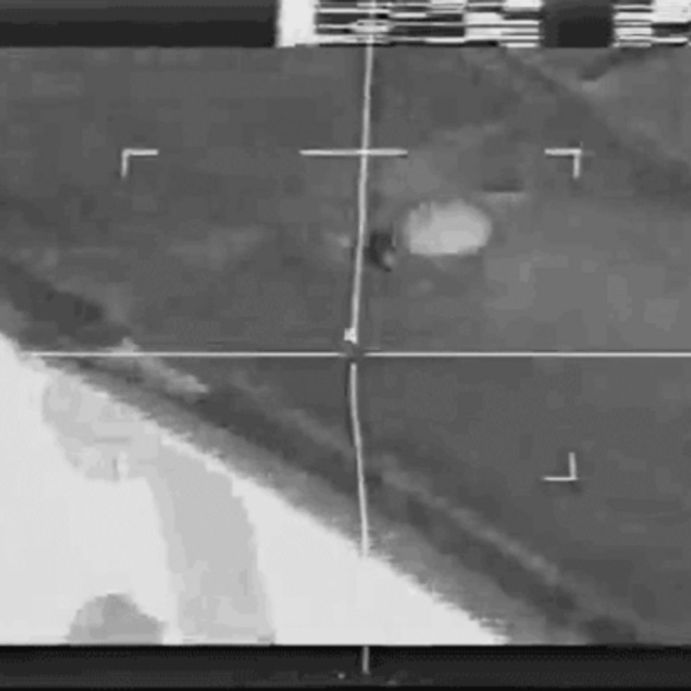

Your Trash is You
Sean Scanlan
Overview
This project critically examines the quantified self through reusing and analyzing digital trash. It uses discarded screenshots as the raw data to create new images and analyzes these images using machine learning. Ultimately, it’s an exploration of the aesthetic and information potential of digital waste within the context of the shifting, increasingly machinic nature of visual culture.
Images as records: three stages in the process towards a trash-based quantified self application.
Introduction
The quantified self movement is about using technology to track aspects of a person's life with the underlying assumption that more data leads to greater personal insight and “positive” changes in behavior. Gary Wolf, a co-founder of this movement, described it as “self-knowledge through self-tracking with technology.” Most often this is applied to biometric data: people wear devices that tell them how many steps they take or how much they’re sleeping. This project instead considers something which is simultaneously more banal yet potentially more personal: the screenshots we take and then discard. In Living in the End Times (1) Slavoj Žižek describes the properly aesthetic attitude of a radical ecologist as “not that of admiring or longing for a pristine nature of virgin forests and clear sky, but rather that of accepting waste as such, of discovering the aesthetic potential of waste, of decay, of the inertia of rotten material which serves no purpose.” Following this train of thought, since the garbage we are dealing with is digital we can push things one step further and not just keep track of our digital waste, but use it as input to create new, recombinant images. These newly constructed machinic images can then be analyzed both by us and the machine, thereby possibly giving us a glimpse into ourselves through the distorted funhouse mirror of self-tracking (or at least creating more trash that we can throw away later).
The intent of this project was two-fold. On the one hand, to highlight the absurdity of this sort of neoliberal drive towards automation by using digital trash to create more digital trash, and on the other, to see if this newly minted trash could offer any sort of insight into ourselves. The end result is a command line application that saves deleted screenshots and uses byte manipulation to create recombinant images from these personal fractured records of ourselves. Then, the program takes these recombinant images and runs them through a machine learning algorithm, trained on the Mobilenet dataset, to generate captions for the images before depositing them in the same folder screenshots are initially stored in. The application both creates new trash for you (thus automating the non-useful task of producing screenshots yourself) and offers a potential glimpse into what a machine thinks you’re looking at, based on the broken, distorted imagery created by reconstituting miscellaneous screenshots into one image.
Process
The process to arrive at this application took a few turns along the way. I started by writing a program to store deleted screenshots. It watched the trashcan on my computer and every time a file named “Screen Shot” followed by some date was dropped in the trash, it copied the image to a separate, hidden folder on my computer.
 


Three screenshots that were thrown away.
I played around with different ways to combine and reconstitute these images. First, I used the ImageMagick command-line tools to make composites of the screenshots, taking a few at a time and blending or multiplying them to create new images. However, these felt overly-constructed and seemed both too close to the original images and somewhat overly aestheticized.
Three composites made from discarded screenshots
I decided to follow the thread of these deleted images as records, and create recombinant images from the record. In other words, I treated this corpus of records as a collected whole and constructed images from it. In order to create an image that incorporated data from all the screenshots I took bytes from all the images while keeping the .jpg header information. This also had the benefit of mimicking the act of digital deletion. When a file is deleted the pointer to that file is removed, allowing new information to be written in the registers containing the old data. To construct these new images I took the bytes from one randomly selected image and went through overwriting the data using bytes from all the other images. This resulted in glitches images which, interestingly, were so broken that my computer would display them differently every time I opened them (yet not so broken that the computer would refuse to open them entirely).
Similar to how glitched images appear visually disjointed, the computer was unable to provide stable visual representations of them. The next logical step felt like using machine learning to decipher these glitched images, or at least consider what they might mean to a machine. I then created another application that generates a glitched, recombinant image with the bytes of all these screenshots, classifies this image using the Mobilenet model, and moves this image to the desktop with the classification as the name of the file. Suddenly, “file_file-cabinet_filing-cabinet_printer_television_television-system.jpg” appears on the screen. Interestingly, while the computer was unable to display a consistent visual output for these glitched images, the machine learning algorithm would consistently return the same description of the image.
printer_file_file-cabinet_filing-cabinet_upright_upright-piano.jpg
Analysis
The end product is an application that produces digital garbage based on the user’s deleted screenshots: images with machinic descriptions, informing us what the computer sees in these recombinant images. In the essay “The Terror of Total Dasein” (2) Hito Steyerl describes Junktime as “the material base of the idea of pure unmediated endless presence.” It’s checking your phone every two minutes because you feel phantom vibrations, thinking you might have gotten an email from your boss or your freelance employer. It happens “when information is not power, but comes as pain.” But, taking screenshots that you later delete doesn’t really fit into this: it’s not similar to scrolling Twitter, looking for new trends in web design to keep up with, or browsing Hacker News to make sure you’re up on the latest tech stacks. It’s a garbage activity in its own right, but not Junktime. By automating it, we can allow for more Total Dasein in everyday life. By removing the need for this essentially useless activity (by the standard of neoliberalism) it frees you up to spend more time on the important tasks, like endlessly refreshing your email.
printer_web-site_website_internet-site_site_analog-clock.jpg
While on the one hand this project jokes about neoliberalism, it also produces these images that, while visually broken, are constituted from meaningful and personal material. Since we cannot interpret these images in a meaningful way, and the quantified self movement is all about extracting meaning from personal data, it follows that for this project we should allow machines to interpret them for us. In “Ghost World,” (3) a review of the book Duty Free Art, Rachel Ossip writes:
When studying works of art, or visual media, we know the litany of questions to ask to decipher an image. Who made the image, and how, and why? What does it show, intentionally and unintentionally? What is its purpose? What does it do? These questions, popularized by John Berger and others, have spread well beyond the academy and the art world to form the baseline of media literacy. But as images proliferate exponentially and their conditions grow more opaque, deciphering them becomes more difficult — not least because humans are no longer privileged interpreters.
Steyerl is interested in exploring how people will adapt to this changing environment of unintelligible (operational, encrypted, broken, and so on) images. However, on one level this project is concerned with the disconnect between what computers see and what we see in relation to recombinant digital records.
Matchstick_web-site_website_internet-site_site_radio_wireless.jpg
In “A Sea of Data: Apophenia and Pattern (Mis-)Recognition” (4) Steyerl writes “Not seeing anything intelligible is the new normal… Seeing is superseded by calculating probabilities. Vision loses importance and is replaced by filtering, decrypting, and pattern recognition.” Machines are excellent at this: machine learning algorithms are trained on hundreds of thousands to millions of images, and then when they encounter new images they are able to filter, calculate the probabilities, and use pattern recognition to decipher them. But, when presented with “images” that are actually disjointed records and not a visual representation of something, the process becomes disconnected from what we think of as vision. We cannot ascribe meaning to glitched images containing bands of color, but a machine easily can. The machine says it’s seeing a man holding a briefcase when shown a glitched image, while no human would ever interpret it that way. Instinctively it feels like the machine is wrong. However, this is only the case if we prioritize human vision, which increasingly makes less sense given the shifting nature of visual culture to one that is increasingly machinic.
As Trevor Paglen points out in “Invisible Images (Your Pictures Are Looking at You),” (5) “Human visual culture has become a special case of vision, an exception to the rule” in that most images are made by and for machines. By trying to discover the aesthetic or informational potential of our digital waste we’ve run into a wall: while the information content of the glitched data isn’t null, we are able to glean very little from the images and descriptions. The “rotten material which serves no purpose” can be understood and “seen” by the machine, but not by us. Machinic interpretation is increasingly what matters, though. Apps and smart devices tell us how much we are are and should be sleeping, how many steps we have a should take, and so on. Machine’s are becoming the arbiter’s of meaning when it comes to our digital data. The quantified self movement is about self-knowledge through self-tracking with technology and given the increasingly machinic nature of everyday life it makes sense that more of the interpretation of the output of self-tracking should be done by machines. This recombinant garbage might say something about you, too bad only the machine knows what that is.
rifle_revolver_six-shooter_six-gun_trombone.jpg
Citations
- Slavoj Žižek. Living in the End Times. (Verso, 2018), 35.
- Hito Steyerl. “The Terror of Total Dasein.” Dis Magazine, http://dismagazine.com/discussion/78352/the-terror-of-total-dasein-hito-steyerl/.
- Rachel Ossip. “Ghost World.” N+1 Magazine, Fall 2018, https://nplusonemag.com/issue-32/reviews/ghost-world/.
- Hito Steyerl. “A Sea of Data: Apophenia and Pattern (Mis-)Recognition.” E-Flux, April 2016, https://www.e-flux.com/journal/72/60480/a-sea-of-data-apophenia-and-pattern-mis-recognition/.
- Trevor Paglen. “Invisible Images (Your Pictures Are Looking at You).” The New Inquiry, 8 Dec. 2016, https://thenewinquiry.com/invisible-images-your-pictures-are-looking-at-you/.